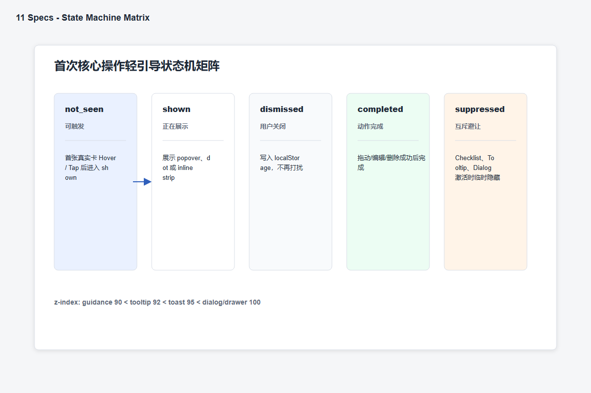
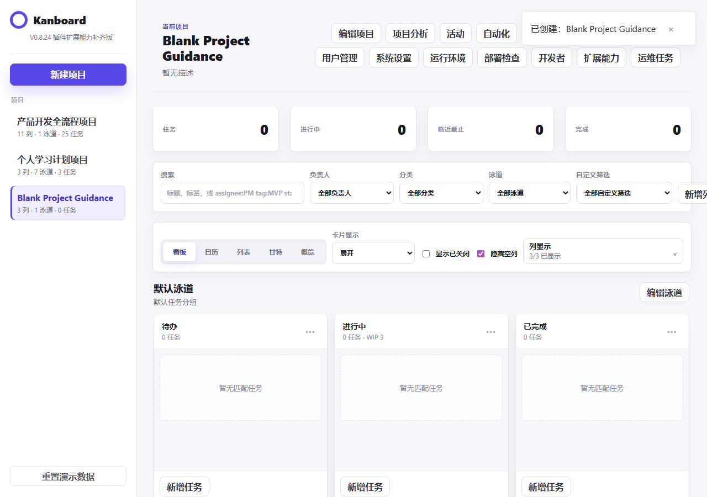

00 / 案例概览
不是给 Kanboard
再加一套教程。
本项目面向初次或低频使用看板的人，帮助他们在不先学习项目管理理论的情况下，建立结构、理解示例并完成第一次真实操作。
产品保持空白创建快捷路径；所有新手帮助都可跳过、关闭或永久退出。
B/C公开证据与待验证假设
4个产品桌面竞品研究
26张关键状态回归截图
449项功能与状态检查
代码、PRD、原型、设计稿、测试和发布记录。
官方文档、GitHub Issues 与公开社区记录。
行为角色、专家模拟走查与未来指标目标。
01 / 问题重构
真正的问题不是功能少，
而是第一步没有决策支撑。
继续复现 Kanboard 的完整系统能力
项目一度扩展到多视图、权限、插件、API 和运维配置。交付变多，却离“为什么值得做”越来越远。
帮助新手建立第一张可用看板
把范围收敛到创建前的结构判断，以及创建后的首次编辑、拖动与真实任务录入。
官方创建流程强调只需项目名；公开记录显示团队会把已有项目当成模板反复复制。
用户需要的不只是“创建成功”，还需要理解将被复制或生成的结构。
增加模板/空白双路径与创建前结构预览。
公开评论同时强调 Kanboard 的快速、轻量，以及界面理解成本和移动端摩擦。
新手帮助不能以牺牲轻量和熟练用户效率为代价。
采用一次性、可退出、按项目隔离的渐进式帮助。
代码、PRD 和回归记录表明现有系统已具备完整创建与任务操作能力。
机会不在继续堆功能，而在把现有能力组织成可理解的首次闭环。
主动排除模板市场、复杂自动化和系统级能力扩张。
02 / 研究设计与证据
先问证据能证明什么，
再决定页面写什么。
本轮没有执行招募式真人访谈。研究使用 Kanboard 官方文档、GitHub Issues、Hacker News 公开记录和四产品桌面分析。
查看研究记录 ↗需要回答的三个问题
- 01新手困难究竟来自操作入口，还是来自看板结构与任务粒度？
- 02模板帮助应该提供多少信息，才不会破坏 Kanboard 的轻量优势？
- 03首次帮助如何在完成任务后退出，并避免打扰熟练用户？
重复创建与模板完整性
官方能力和多个 Issue 表明，团队会复制已有项目，并在意权限、任务、日期和结构是否完整继承。
影响：预览不能只显示模板名称，必须解释将生成什么。 来源：Kanboard Projects 文档、GitHub #3434 / #4909 / #4153 / #2329个人用户的轻量偏好
公开评论把 Kanboard 描述为快速、适合小型项目，同时也指出元数据和组织化界面会增加负担。
影响：保留清楚、直接的空白创建入口。 来源：HN 36055423 / 39745588 / 37072837，GitHub #5746移动端可达性风险
公开问题覆盖横向滚动、触摸误触、iPad 创建失败和弹窗视口利用不足。
影响：移动端需要专用容器和触控规则，不能缩小桌面布局。 来源：GitHub #5736 / #4302 / #4727 / #5382未保存内容保护
用户报告 ESC 退出导致编辑丢失，并要求不同弹窗保持一致的 dirty-form 保护。
影响：错误、关闭和防误删状态是核心流程，不是边角状态。 来源：GitHub #5505 / #539503 / 竞品与替代方案
不比较功能多少，
只比较第一次如何开始。
| 判断维度 | Kanboard | WeKan | Trello | Notion |
|---|---|---|---|---|
| 第一次创建 | 极简项目入口 | 看板与协作配置 | 空白与模板并存 | 页面与模板并存 |
| 结构支持 | 可复制已有项目 | 依赖看板配置 | 模板带列与卡片 | 模板带数据库结构 |
| 学习方式 | 偏文档与工具语义 | 偏协作配置 | 在模板中理解 | 在内容结构中理解 |
| 本项目启示 | 保留 Kanboard 的直接性，只引入一次“从场景到结构”的低干扰桥梁。 | |||
B 桌面研究记录日期：2026-06-01。产品事实不能自动证明用户价值，比较结论只用于支持本项目范围判断。
04 / 需求分析
把公开行为翻译成任务，
而不是从已有功能倒推需求。
团队反复复制标准项目，并检查结构是否完整。
创建前无法判断模板是否适合现有工作方式。
当我创建类似项目时，希望先核对结构，再决定是否生成。
模板卡 + 分区结构预览
P0 · 当前原型验收
个人用户追求快速和少负担，不愿先配置复杂字段。
模板能力可能反过来拖慢已经知道做法的人。
当我已有工作流时，希望直接创建空白项目，不被教学打断。
空白/模板双路径与零挂载规则
P0 · 路径隔离检查
模板只给结构仍不足以解释任务粒度和第一次动作。
创建成功后仍不知道怎样把示例变成自己的任务。
当我进入第一张看板时，希望通过真实动作理解如何开始。
示例卡 + 0/3 Checklist + 轻引导
P1 · 状态与回归检查
05 / 行为角色
角色来自可观察行为，
不是虚构人口属性。
个人轻量用户
行为：先找空白或最简单模板，倾向删掉无关示例。
适配：双路径、低信息密度、帮助可退出。
风险：模板默认项仍未由真人验证。标准流程复用者
行为：创建前检查列、泳道、任务和复制范围。
适配：分区预览和结构说明。
风险：权限继承不属于本轮优化范围。移动快速记录者
行为：优先判断滚动、触达和底部操作是否可用。
适配：Drawer、Inline Strip、Bottom Sheet。
风险：只完成 Chromium 390px 验证。编辑保护敏感用户
行为：会测试 ESC、背景点击和删除是否导致内容丢失。
适配：dirty-form 与首次删除确认。
风险：具体文案仍需真人理解测试。06 / 机会与产品范围
首版只守住一条
可完成的激活闭环。
优先级综合考虑是否服务核心角色、是否破坏首次闭环、证据强度、老用户影响，以及静态原型的实现风险。
- 空白项目与场景模板双路径
- 创建前结构预览与可编辑示例卡
- 错误、加载、关闭保护和成功状态
- 0/3 Checklist 与字段 Tooltip
- 首次拖动、编辑、菜单和删除保护
- 390px 专用移动交互容器
- 完整模板市场与自定义模板管理
- 强制步骤式教学系统
- AI 自动拆解与真实模型接口
- 权限体系、API、插件与部署能力扩张
- 生产级账号、后端和多人实时协作
- 未经真实流量支持的增长实验
07 / 产品方案设计
方案不是四个功能点，
而是一套逐步退出的帮助机制。
创建前：先理解结果，再做选择
- 用户问题
- 只看到模板名称，无法判断结构是否适用。
- 证据
- B 重复创建用户检查复制完整性。
- 设计决策
- 模板卡保持简洁，详细结构在预览区分层呈现。
- 工作机制
- 选择模板 → 查看列/泳道/示例任务 → 确认创建。
- 风险边界
- 默认模板与信息密度仍需真人测试。
创建后：用三个真实动作完成破冰
- 用户问题
- 创建成功后仍不知道如何把示例变成自己的任务。
- 证据
- C 产品推断与专家走查。
- 设计决策
- Checklist 不讲理论，只要求编辑、拖动和新建。
- 工作机制
- 每个动作写入项目级状态，3/3 后完成并允许永久隐藏。
- 风险边界
- 尚未证明三个动作足以形成真实使用习惯。
操作中：所有帮助层必须互斥
- 用户问题
- Checklist、Tooltip、Dialog 同时出现会争夺注意力。
- 证据
- A 状态规格、实现与回归记录。
- 设计决策
- 轻引导引入 suppressed 状态，主动避让高层组件。
- 工作机制
- not_seen → shown → completed/dismissed；冲突时进入 suppressed。
- 风险边界
- 状态可达不等于真实用户能理解提示。

08 / 界面与交付产出
按用户主链路组织截图，
每张图只回答一个决策。
用结构预览替代盲选模板
决策：预览按列、泳道和示例任务分区，既支持复用者核对结构，也不把全部细节塞进模板卡。
未验证：默认信息密度是否对个人轻量用户仍然偏高。
把“学会看板”缩成三个动作
决策：0/3 Checklist 只追踪编辑示例、向右拖动和新建真实任务，不要求阅读独立教程。
未验证：完成 3/3 是否会带来持续使用。
提示第一次，不占领整个界面
决策：拖动和编辑使用局部 Popover；一旦完成、关闭或与高层组件冲突，提示永久退出或暂时抑制。
已验证：状态切换和互斥路径可达。
空白项目保持零挂载
决策：空白项目和已完成引导的项目不挂载 Checklist，也不显示首次操作提示。
已验证：项目隔离与刷新持久化；未验证真实老用户的主观干扰感。
移动端不是桌面端缩小版
390px 下，
更换交互容器。
长清单进入 Bottom Drawer，删除确认改为 Bottom Sheet，操作轻引导变成不遮挡任务的 Inline Strip。
- 关键触控目标至少 44px
- 页面与看板网格无横向溢出
- 状态不只依赖颜色表达


09 / 验证与迭代
测试证明路径可达，
不把它包装成用户效果。
验证由静态功能检查、真实浏览器截图、localStorage 状态记录和站点发布审计组成。所有数字都归入交付质量，不归入用户结果。
Checklist 判定曾只覆盖测试端模拟，不能证明真实产品路径。
→移除测试假数据，改为对实际实例化卡片和真实事件做检查。
真实缺陷被红灯暴露并修复，最终进入 449 项全量检查。
Popover、Tooltip、Checklist 与 Dialog 可能同时争夺注意力。
→增加 suppressed 状态与组件层级规则。
冲突组件激活时提示销毁，完成后不重复出现。
桌面浮层直接缩小到移动端会遮挡看板和操作区。
→改用进度气泡、Bottom Drawer、Inline Strip 和 Bottom Sheet。
390px 无页面级横向溢出，关键操作保持可触达。
A 这些结果证明设计已实现、状态可达并可以公开演示；不代表激活率、留存率、满意度或任务完成率得到提升。
10 / 结果、边界与未来计划
项目真正证明了什么，
以及还没有证明什么。
- 能基于公开资料和竞品事实定义问题，并标注证据边界。
- 能把问题转译为需求池、范围、PRD、用户故事和验收标准。
- 能设计桌面/移动端流程、状态模型和关键机制。
- 能把方案落成可运行静态原型并公开发布。
- 能建立自动化检查、视觉回归和版本收尾闭环。
- 新手问题在目标人群中的发生比例。
- 模板、Checklist 或轻引导对首次行动率的真实改善。
- 真实留存、转化、收入、满意度和持续运营结果。
- 真实团队中的跨部门协作与研发资源管理。
- 生产级系统、真机覆盖和正式组件库交付。
下一阶段只验证现有设计，不默认继续增加功能。
- 015 名新手出声思考测试
比较空白与模板路径，记录原始行为、卡点和理解偏差。
- 02真实 iOS 与 Android 设备检查
复核创建、滚动、Drawer、Bottom Sheet 和触控替代方案。
- 03最小匿名事件漏斗
只观察创建开始、创建成功与首次行动；取得真实流量后再谈效果。
案例中的每个主要状态，都可以在原型中亲自操作。